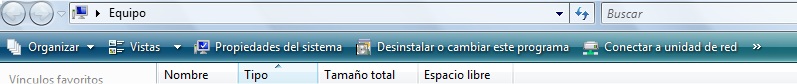

OBJETIVO DE WINDOWS
El alumno será capaz de realizar copias de seguridad, aprenderá a copiar los archivos a diferentes unidades de almacenamiento; por otro lado, aprenderá a conectar su cámara digital o celular para copiar las fotos a su computadora; será capaz de usar vacunas en su información para evitar la propagación de virus; podrá comprimir sus archivos o imágenes en una red local o podrá enviarlos por Internet, etc.
Adquirirá los conceptos básicos para realizar un escaneo al sistema, respaldo de información, restauración del sistema a un punto estable anterior, etc.
También tendrá un conocimiento suficiente del uso de los accesorios de Windows.